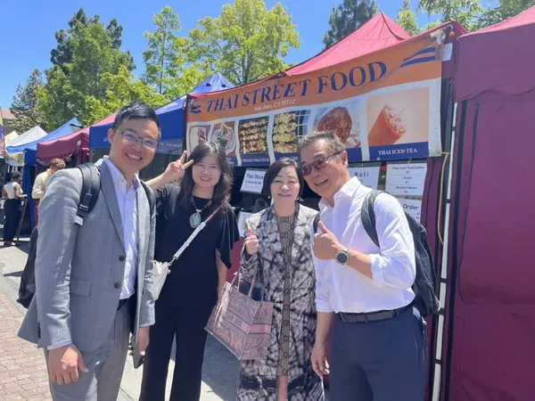
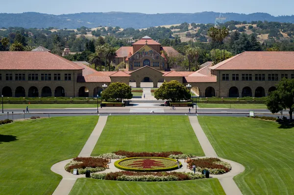
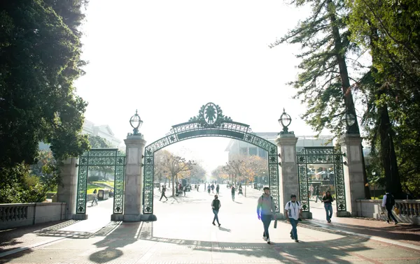
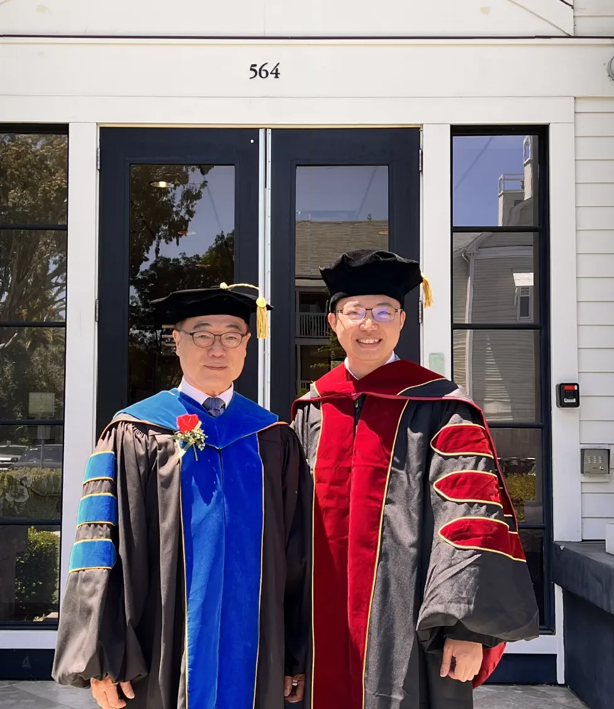
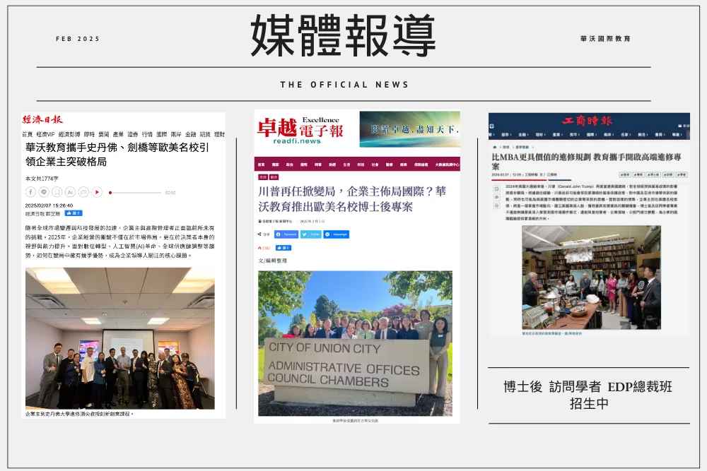

AI 與新興科技
看懂技術趨勢，判斷哪些真正適用於你的產業
全球新興技術・全球經濟學
2027 第 9 期｜AI × MANAGEMENT × SILICON VALLEY
史丹佛大學・柏克萊加州大學・加州州立大學
8 個月線上進修，取得三校結業證書與國際學術經歷
從看懂 AI 趨勢到做出 AI 決策到帶領企業轉型
讓你 與 AI 時代同步
三校教授 × 矽谷企業高層 × 你的公司課題

01
打通 AI 時代企業主需要的經營能力
看懂技術趨勢，判斷哪些真正適用於你的產業
全球新興技術・全球經濟學
把新機會變成可執行、可融資的事業計畫
創新研究與創業・新創融資・矽谷新創管理與資金
帶領團隊轉型，讓市場看見你的價值
現代企業領導力・矽谷設計思維・競爭性行銷
更大的格局，從這 8 個月開始
02
而是把 AI 變成經營決策的判斷力
麥肯錫 2025 年全球調查：88% 的企業已在至少一個業務功能常態使用 AI，但只有約三分之一開始規模化推動，僅 7% 已在全公司全面規模化。
差距不在有沒有用 AI，而在會不會用 AI 做決策。
你不是沒有經驗
而是還沒把經驗，轉化成 AI 時代的決策語言
03
而是決策、人才與資金的流向
到 2028 年，至少 15% 的日常工作決策將由代理式 AI 自主完成；2024 年這個比例是 0%。
（Gartner）
86% 的雇主預期 AI 與資訊處理技術將在 2030 年前改變自家業務；勞動者既有技能中約 39% 將被改變或過時。（世界經濟論壇《2025 未來就業報告》）
全球近 40% 的就業受到 AI 影響，先進經濟體約 60%。（國際貨幣基金 IMF）
2025 年全球企業 AI 投資成長超過一倍；生成式 AI 三年內達到 53% 的人口普及率，比個人電腦與網際網路更快。
（史丹佛大學《AI Index》）
變化已經發生
越早看懂，越能掌握調整的時機
04
AI 正在改變顧客的需求與購買方式，你的產品與服務要如何跟上？
當 AI 進入每一個部門，你要如何帶領團隊與 AI 協作？
AI 帶來的新機會，需要多少資源？成長路徑在哪裡？
換一個對象
就要換一套經營思維
05
不只聽懂趨勢，更要帶回公司
8 門課學到的方法，最後會落實成一份以你自己公司為題的研究專題。研究方向例如：
教授與商業導師全程陪伴，學期間可預約教授一對一指導，兼顧學術價值與商業應用。專題聚焦在經營決策與組織應用，不需要寫程式。
把「知道 AI」
變成「用 AI 經營」
CURRICULUM
2027 年 3 月開學、10 月結業｜每月 1 次・台灣時間週日上午｜每門課 3 小時＋學術期刊寫作｜中英雙語＋即時翻譯
*2027 年師資以校方公告為準
06
以你的公司為題，完成一份研究專題
涵蓋科技、創新、資金、領導與市場
學期間可預約教授，針對你的課題請益
在美國矽谷研究院全球學術論壇發表研究成果
史丹佛、柏克萊、加州州立大學三校結業證書，證書上不會有「網路班」字樣，可辦理海牙或使館公證
平均 15–20 位企業主與高階主管同班，結業後持續與教授、矽谷研究院及歷屆學員保持連結
＋ 結業後一年內發表國際期刊，可再取得加州州立大學頒發的第 4 張證書，論文題目會載明在證書上
07
不只在線上學，更走進 AI 的現場
每年 10 月底舉行，行程安排與費用另計。
另有「史丹佛 4 天 3 夜學術課程與矽谷創新之旅」（Executive Development Program at Stanford），需另外報名。
有別於走馬看花的旅遊團
是帶著自己的課題，走進矽谷
*實際課程與行程規劃依照校方正式入學通知為準



08
站在世界 AI 研究的源頭學習

STANFORD
BERKELEY CSU
CSU本計畫由美國矽谷研究院（SVRI）承辦，與三校合作開設研究中心專案，邀請矽谷大型科技企業高層授課，並舉辦全球學術論壇。

CSU Monterey Bay
美國矽谷研究院院長兼董事長

Stanford & UC Berkeley
Pegasus 創投合夥人，專注 AI 等深度科技投資

CSU Monterey Bay
專長新創融資與公司治理

矽谷 IBM
專長新興科技與科技創投

Stanford
講授設計思維

矽谷科技公司高層
曾任西門子高層

Stanford
專研 AI 與法律
UC Berkeley
柏克萊傑出教學獎得主

YOUR MENTOR
從 18 歲台北補教界名師，到國際教育型企業家
台北北京深圳東京新加坡吉隆坡金邊雅加達曼谷加州賓州劍橋
09
2027 年邁入第 9 期，持續帶企業主走進美國產官學界
2025 年 2 月，經濟日報、工商時報、卓越電子報相繼報導華沃與歐美名校合作的進修專案。

10
帶著你公司的 AI 課題進場。
11
不需要。核心是經營決策：看懂 AI 對產業的影響，並應用在管理、資金與市場策略上。
適合。AI 正在影響各行各業，研究專題以你自己的產業與公司為題。
本計畫以訪問研究的形式進行，重點在 AI 趨勢、矽谷實務與以自己公司為題的研究專題，與既有的進修經歷相輔相成。
可以。中英雙語授課，加上即時翻譯，免語言成績。
可以。每月 1 次，台灣時間週日上午，每次 3 小時，不需離職，也不需長住美國。
線上直播班全程線上，不需出國。若選配赴美行程，團隊會提供赴美簽證所需資料，協助辦理簽證手續。
不保證。課程提供方法、案例與教授指導；實際成效仍取決於企業的產品、營運與後續執行。
不一定。結業即可取得三校結業證書；結業後一年內發表國際期刊，可再取得第 4 張證書。
一樣，證書上不會有「網路班」字樣，並可辦理海牙或使館公證。
費用包含課程、學術指導與證書；實體校園班另含企業參訪、住宿與課程期間餐飲。審查約 14 個工作天，錄取者等候入學，未錄取者全額退費。方案細節與獎學金資格，由顧問一對一說明。
12
讓你 與 AI 時代同步。跟國際招生顧問聊聊你的經歷與公司課題，了解適合的身分別、上課方式與獎學金。
身分別：訪問學者、博士後研究、EDP 總裁班（博士後研究為研究身分，不是學位）。書面審查，免筆試；適合的身分別依個人經歷，由顧問一對一說明。結業取得三校結業證書，並可列入個人的國際學術經歷。
2027 第 9 期3 月開學・滿 12 人即開班
立即預約一對一諮詢